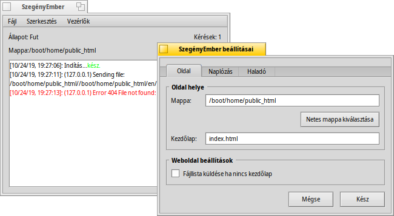

SzegényEmber (PoorMan)
SzegényEmber (PoorMan)
| Asztalsáv: | ||
| Útvonal: | /boot/system/apps/PoorMan | |
| Beállítások: | ~/config/settings/PoorMan Settings |
A SzegényEmber egy remek kis internetes kiszolgáló (webserver), melyet könnyen beállíthatunk. Természetesen nem tartalmaz semmilyen speciális funkciót, vagy beállítást, éppen innen is ered a neve: SzegényEmber kiszolgálója.
Első indításkor a program megkérdezi, hogy mely mappát szeretnénk használni a kiszolgálni kívánt tartalom számára. Ha az et választjuk, akkor egy új mappát fog létrehozni (/boot/home/public_html). Kezdőoldalnak egy index.html nevű HTML fájlnak léteznie kell a mappában.
A program lényegében egy konzol ablakból áll, mely tartalmazza a program naplóját is. Ezen kívül informálódhatunk a kiszolgáló állapotáról, a mappáról, és a kérések számáról. A beállítások a menüből érhetőek el:

A beállítások ablak 3 részre osztható:
Az fülön módosíthatjuk a kiszolgálandó mappa helyét, a kezdőoldal nevét, illetve azt, hogy ha nem található kezdőoldal a mappában, akkor az oldalon a mappa tartalma jelenjen-e meg vagy sem.
A fülön ki- illetve bekapcsolhatjuk a naplózást a konzolba, vagy megadhatunk egy külön naplófájlt is.
beállítások esetén pedig a maximális egyidejű kapcsolatok számát tudjuk szabályozni.
A konzol ablakban lévő menüelemek magától értetődőek. Például elmenthetjük a konzolon látott naplót, vagy épp kiüríthetjük azt, leállíthatjuk/elindíthatjuk a kiszolgálót, illetve lenullázhatjuk a kapcsolatok számát.